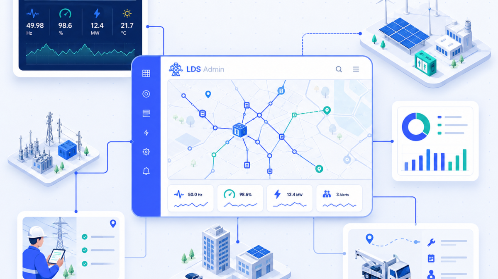
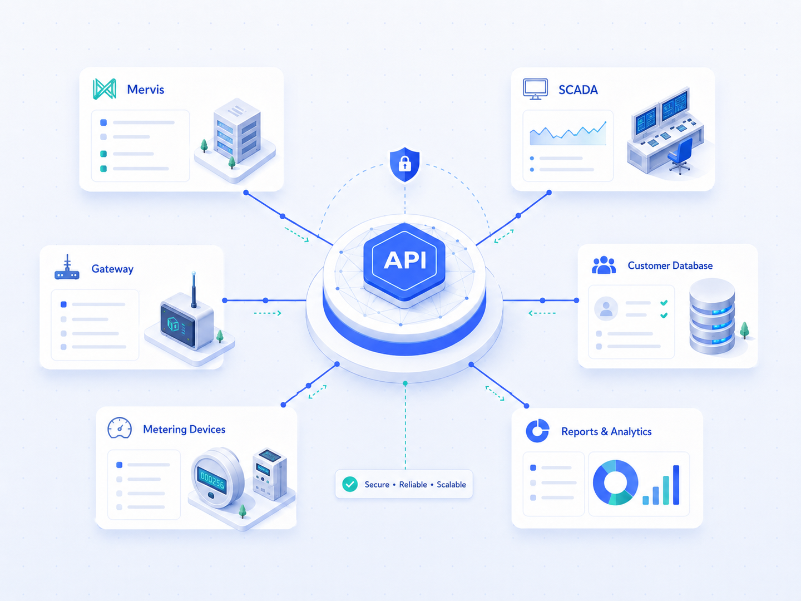

Mervis
Napojení provozních systémů podle dostupných rozhraní.

LDS Admin je připravený propojit data z měřicí techniky, provozních systémů a administrační aplikace do jednoho bezpečného workflow.

Obsah je navržený tak, aby uživatel rychle pochopil hodnotu modulu a vyhledávače dostaly jasný kontext.
Napojení provozních systémů podle dostupných rozhraní.
Provozní data, alarmy a technické události pro dispečink.
Hodnoty z elektroměrů, senzorů, PLC a datových bran.
Strukturovaná synchronizace měření, dokumentů a zákaznických dat.
Bezpečný sběr a předávání hodnot do administrace.
Data pro dashboardy, exporty, audit a plánování údržby.
Ozvěte se nám a projdeme vhodné nasazení, integrace i další kroky pro vaše týmy.